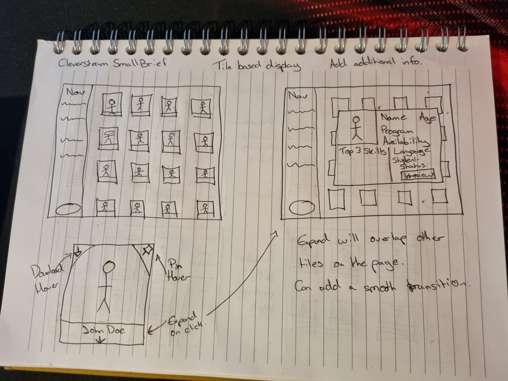
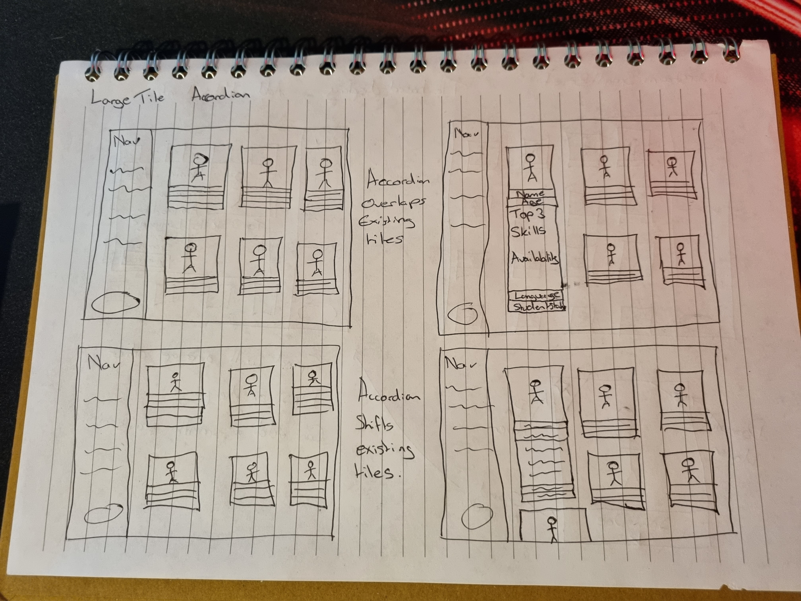
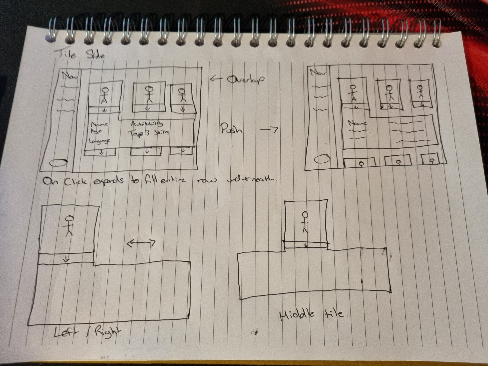
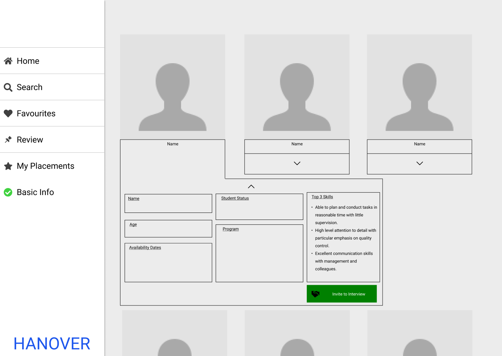
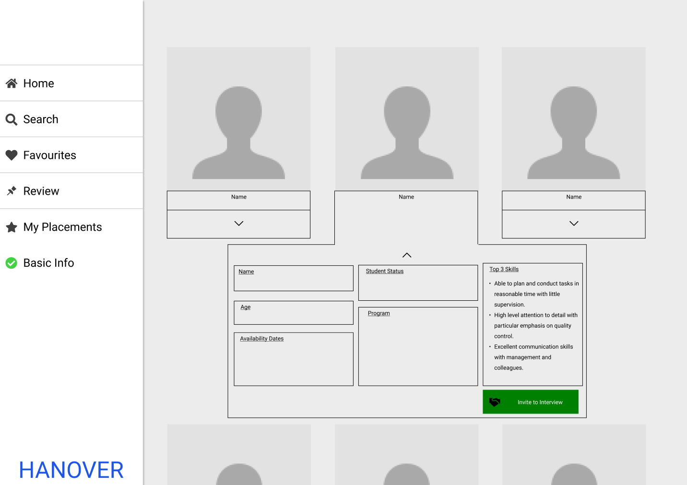
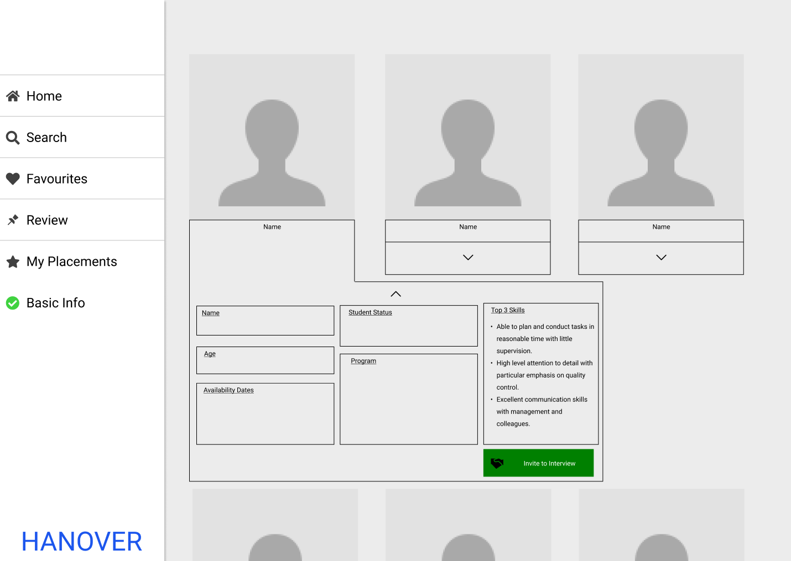
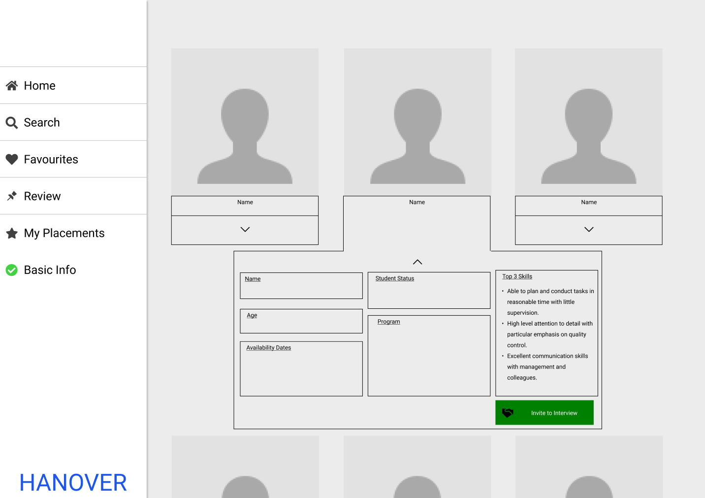

The Brief
In this task the client had an administrative system where when logged in as an employer, it was possible to search a list of available participants. The search results were presented as a tile based layout which was requested to be retained. However, there was limited data in those tiles and an exploration was requested of how the tiles could be redesigned to include the following information to improve the current system (pictured):
- Name
- Program
- Age
- Availability Dates
- Top 3 Skills
- Profile Photo
- Option To Interview
- Primary Language (and any others)
- Student Status
Ideation
This task was given a purely design and UX focused approach through the use of Figma to explore various display methods.
The initial ideation process was, however, conducted using pen and paper to get a feel for tile sizing, how much information would be shown and how interactivity might exist within the system. I believed that an expanding tile that showed a selection, or the most pertinent, of information initially and the rest upon clicking was the best approach. Several potential methods were drawn up:
A minimal tile layout with a large expanding popup on click that would contain almost all the required information. This popup would overlap all other tiles until it is closed. Additionally a hover system in the corner of each tile was explored to add functionality of pinning a specific tile for review or download the full pdf of each participants application.
A larger tile layout with headings for a selection of information such as name and age. Clicking on some of these headings would expand the tile vertically to reveal more information. The interactivity of these tiles was also explored in how they would either overlap tiles beneath them or shuffle everything down.
A variation on the vertical expansion was also conceived where a box containing information would expand below each tile. The shape of this box would change depending on the placement of the tile that was clicked. As with previous designs the way these boxes would interact with other tiles was explored in overlapping content and also vertical shuffling.
Prototyping
The above designs were prototyped in Figma to give a higher level of detail and understanding to their functionality including the way that the expansions would interact with other tiles on the page.
All of the required information was added to these designs as well as the inclusion of the hover elements to the corners of each tile.
These designs were ultimately disposed of in favour of the expanding popup style. A higher fidelity prototype was then created with this feature.
 



Final Design
As detailed above, the final design used the expanding popup display for each tile. The initial view of each tile would contain the users profile photo in addition to their name and age.
An additional feature included in this design was a set of filters at the top of the page which when options were selected by the employer would give each participant a candicacy rating to give a numerical value to how much they match what the employer is searching for. The participants would then be displayed in decending order based on their rating. This was done to give the employer incentive to click on specific tiles over others so that they may see the expanded popup which contained the rest of the required information should the employer need to see it.
Upon presenting this design to stakeholders, the variable tile layout was determined to be a valuable feature, as each user of this system may have differing preferences. As a result, a toggle was included which would switch the display between smaller tiles with minimal information, and larger tiles with a slightly expanded amount of information. Functionality remained consistent with the popup but this allowed for more freedom in how the system was used.
The final Figma prototype and its functionality can be found here.